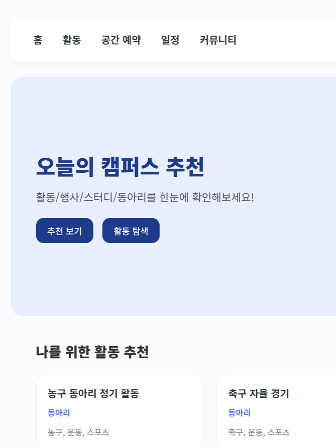
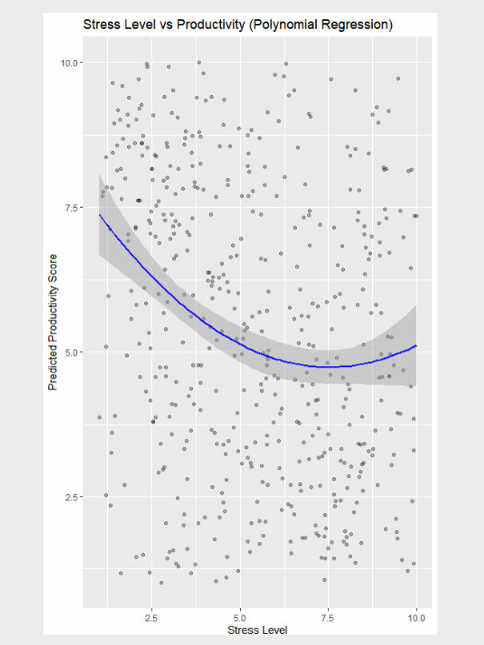
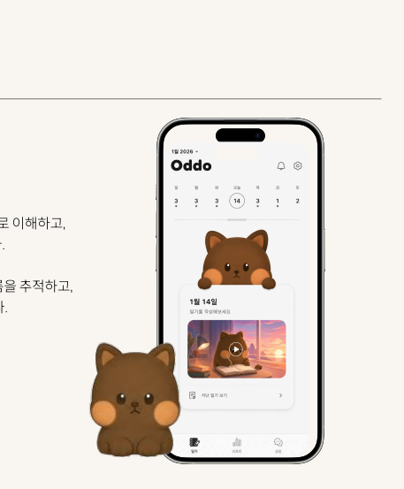

Projects
Campus Link
Campus Link는 대학 캠퍼스 내 활동, 일정, 공간 예약을 하나의 플랫폼에서 통합 관리하기 위한 웹 서비스입니다.
Oracle 데이터베이스를 기반으로 사용자, 활동, 공간, 예약, 일정, 커뮤니티 기능을 설계하고, PHP를 활용해 웹 페이지와 데이터베이스를 연동하여 실제 서비스 흐름을 구현했습니다.
단순한 기능 구현에 그치지 않고, 데이터 무결성과 확장성을 고려한 DDL 설계와 실제 사용 시나리오를 반영한 테이블 관계 설계에 중점을 두었습니다.

LifeLog Productivity Predictor
LifeLog Productivity Predictor는 수면 시간, 스트레스 지수, 번아웃 수준 등 다양한 라이프로그 데이터를 통합·전처리하여 개인의 생산성을 예측하는 데이터 분석 프로젝트입니다.
Linear Regression, Decision Tree, Lasso, Polynomial Regression 등 여러 머신러닝 모델을 학습·비교하여 예측 성능을 분석하고 최적의 모델을 도출했습니다.

OddO (오또)
OddO는 멀티모달 실시간 감정 분석을 기반으로 사용자의 하루를 대화형으로 기록해주는 AI 감정 영상 일기 시스템입니다.
표정, 음성, 텍스트 등 다양한 입력을 통합 분석하여 감정 변화를 실시간으로 추적하고, 자기거리두기(self-distancing) 이론에 기반한 SFT 상담 모듈을 통해 사용자의 정서적 회고를 돕습니다.
4인 팀 프로젝트로 진행 중이며, 본인은 멀티모달 감정 분석 및 대화형 일기 구현을 담당하고 있습니다.
